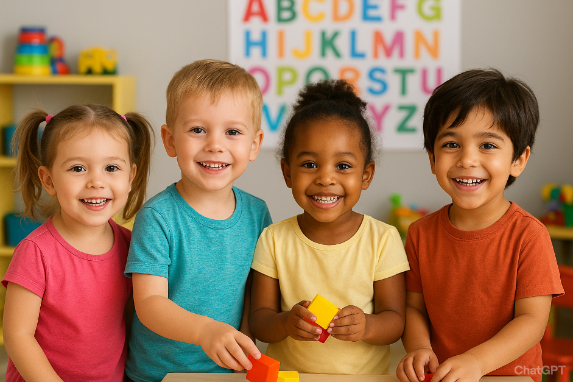
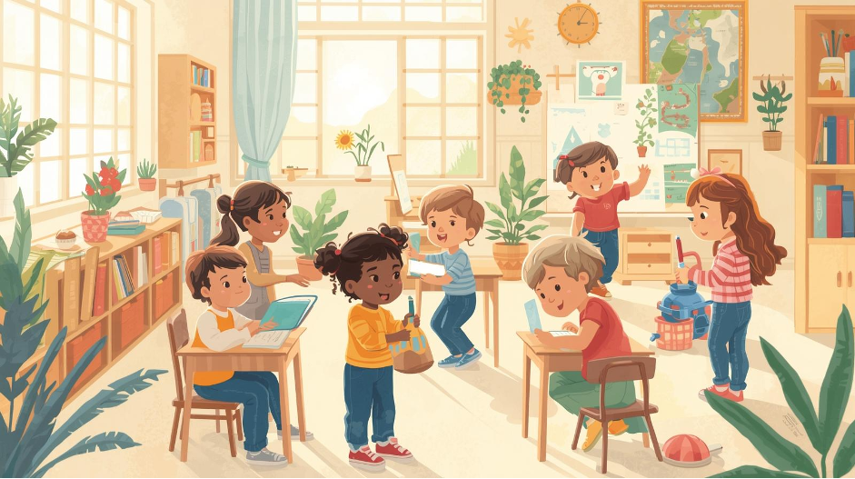
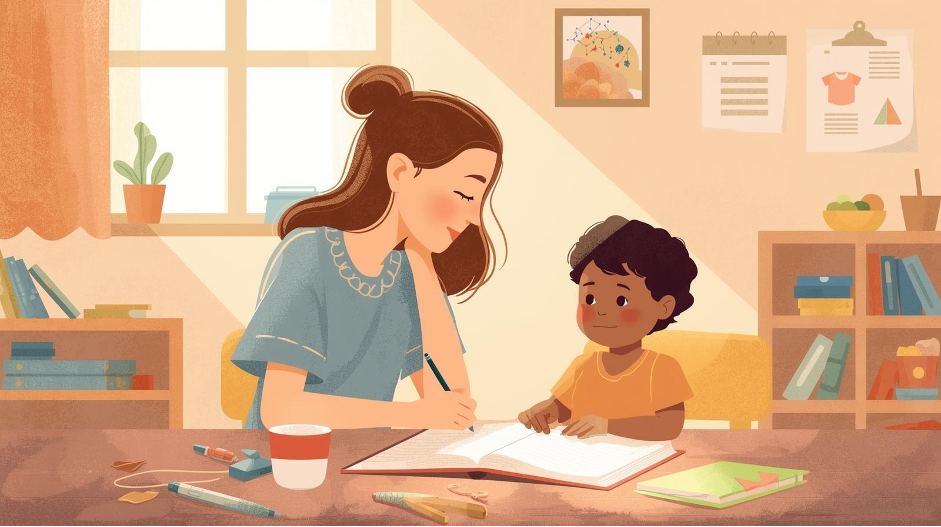
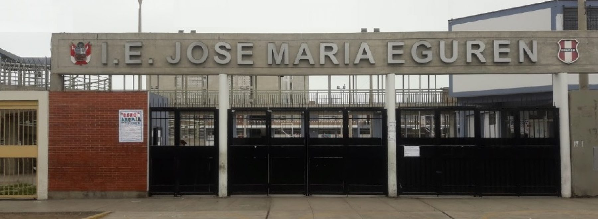
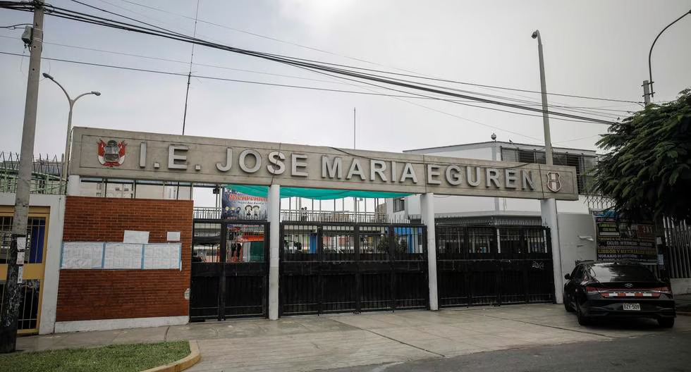

Momentos del Proyecto
Capturas de nuestro trabajo en la I.E.E. 6052 José María Eguren





Momentos y experiencias de nuestro proyecto
Capturas de nuestro trabajo en la I.E.E. 6052 José María Eguren
Conoce a los integrantes del proyecto "Puentes de Aprendizaje"


Registro visual de nuestras actividades en el proyecto


Explora más sobre nuestro proyecto y conoce todos los detalles de nuestra metodología de trabajo.